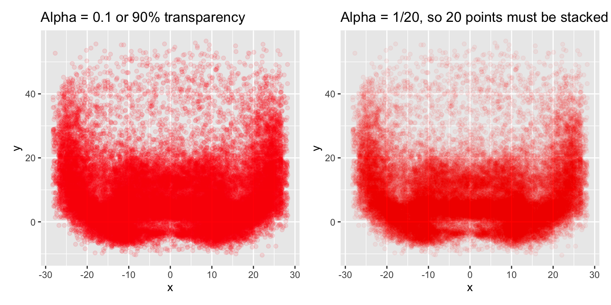

Many thanks to Ethan Douglas for sharing his heatmap python code on OpenSource Football! 1 This is a similar walkthrough to Ethan’s post, but in R + ggplot2. Additionally, credit for both collecting the data and the original plot go to Ethan.
1 Douglas (2020, Aug. 21). Open Source Football: NFL Pass Location Visualization. Retrieved from https://mrcaseb.github.io/open-source-football/posts/2020-08-22-nfl-pass-location-visualization/
Please also note that the original code adapted from Ethan came from Sarah Mallepalle et al, 2019. 2 Many thanks to Sarah, Ron, Konstantinos, and Sam for sharing this data collection tool!
2 https://arxiv.org/abs/1906.03339
Load Everything
souce_url <- "https://raw.githubusercontent.com/ArrowheadAnalytics/next-gen-scrapy-2.0/master/pass_and_game_data.csv"
pass_map_df <- read_csv(souce_url) %>%
na.omit()
glimpse(pass_map_df)Rows: 37,408
Columns: 42
$ posteam <chr> "BAL", "BAL", "BAL", "BAL", "BAL", "BAL", "BAL", "BAL…
$ week <dbl> 12, 12, 12, 12, 12, 12, 12, 12, 12, 12, 12, 12, 12, 1…
$ name <chr> "Joseph Flacco", "Joseph Flacco", "Joseph Flacco", "J…
$ pass_type <chr> "COMPLETE", "COMPLETE", "COMPLETE", "COMPLETE", "COMP…
$ x <dbl> 1.4, 12.6, -11.1, 18.3, 9.6, -13.8, -4.4, 17.1, -20.0…
$ y <dbl> 2.0, -6.6, -0.1, 8.1, 1.9, 12.1, 6.8, -4.4, 2.3, 14.1…
$ season <dbl> 2017, 2017, 2017, 2017, 2017, 2017, 2017, 2017, 2017,…
$ game_id <chr> "2017_12_HOU_BAL", "2017_12_HOU_BAL", "2017_12_HOU_BA…
$ game_type <chr> "REG", "REG", "REG", "REG", "REG", "REG", "REG", "REG…
$ gameday <date> 2017-11-27, 2017-11-27, 2017-11-27, 2017-11-27, 2017…
$ weekday <chr> "Monday", "Monday", "Monday", "Monday", "Monday", "Mo…
$ gametime <time> 20:30:00, 20:30:00, 20:30:00, 20:30:00, 20:30:00, 20…
$ away_team <chr> "HOU", "HOU", "HOU", "HOU", "HOU", "HOU", "HOU", "HOU…
$ away_score <dbl> 16, 16, 16, 16, 16, 16, 16, 16, 16, 16, 16, 16, 16, 1…
$ home_team <chr> "BAL", "BAL", "BAL", "BAL", "BAL", "BAL", "BAL", "BAL…
$ home_score <dbl> 23, 23, 23, 23, 23, 23, 23, 23, 23, 23, 23, 23, 23, 2…
$ location <chr> "Home", "Home", "Home", "Home", "Home", "Home", "Home…
$ result <dbl> 7, 7, 7, 7, 7, 7, 7, 7, 7, 7, 7, 7, 7, 7, 7, 7, 7, 7,…
$ total <dbl> 39, 39, 39, 39, 39, 39, 39, 39, 39, 39, 39, 39, 39, 3…
$ overtime <dbl> 0, 0, 0, 0, 0, 0, 0, 0, 0, 0, 0, 0, 0, 0, 0, 0, 0, 0,…
$ old_game_id <dbl> 2017112700, 2017112700, 2017112700, 2017112700, 20171…
$ away_rest <dbl> 8, 8, 8, 8, 8, 8, 8, 8, 8, 8, 8, 8, 8, 8, 8, 8, 8, 8,…
$ home_rest <dbl> 8, 8, 8, 8, 8, 8, 8, 8, 8, 8, 8, 8, 8, 8, 8, 8, 8, 8,…
$ away_moneyline <dbl> 311, 311, 311, 311, 311, 311, 311, 311, 311, 311, 311…
$ home_moneyline <dbl> -357, -357, -357, -357, -357, -357, -357, -357, -357,…
$ spread_line <dbl> 7.5, 7.5, 7.5, 7.5, 7.5, 7.5, 7.5, 7.5, 7.5, 7.5, 7.5…
$ away_spread_odds <dbl> -103, -103, -103, -103, -103, -103, -103, -103, -103,…
$ home_spread_odds <dbl> -107, -107, -107, -107, -107, -107, -107, -107, -107,…
$ total_line <dbl> 39.5, 39.5, 39.5, 39.5, 39.5, 39.5, 39.5, 39.5, 39.5,…
$ under_odds <dbl> -102, -102, -102, -102, -102, -102, -102, -102, -102,…
$ over_odds <dbl> -108, -108, -108, -108, -108, -108, -108, -108, -108,…
$ div_game <dbl> 0, 0, 0, 0, 0, 0, 0, 0, 0, 0, 0, 0, 0, 0, 0, 0, 0, 0,…
$ roof <chr> "outdoors", "outdoors", "outdoors", "outdoors", "outd…
$ surface <chr> "grass", "grass", "grass", "grass", "grass", "grass",…
$ temp <dbl> 50, 50, 50, 50, 50, 50, 50, 50, 50, 50, 50, 50, 50, 5…
$ wind <dbl> 1, 1, 1, 1, 1, 1, 1, 1, 1, 1, 1, 1, 1, 1, 1, 1, 1, 1,…
$ away_coach <chr> "Bill O'Brien", "Bill O'Brien", "Bill O'Brien", "Bill…
$ home_coach <chr> "John Harbaugh", "John Harbaugh", "John Harbaugh", "J…
$ referee <chr> "Brad Allen", "Brad Allen", "Brad Allen", "Brad Allen…
$ stadium_id <chr> "BAL00", "BAL00", "BAL00", "BAL00", "BAL00", "BAL00",…
$ stadium <chr> "M&T Bank Stadium", "M&T Bank Stadium", "M&T Bank Sta…
$ defteam <chr> "HOU", "HOU", "HOU", "HOU", "HOU", "HOU", "HOU", "HOU…Why not just plot the points?
Why even mess around with heatmaps or 2d density plots? Well, we run the risk of overplotting by graphing just the points without thinking or adjusting any of the aesthetics.
Hadley Wickham in ggplot2: Elegant Graphics for Data Analysis:
When the data is large, points will be often plotted on top of each other, obscuring the true relationship. In extreme cases, you will only be able to see the extent of the data, and any conclusions drawn from the graphic will be suspect. This problem is called overplotting.
Hadley uses an example with just 2000 data points, which already has a lot of overplotting due to a small sample x-y space. We have about 43,000 passes for this dataset, spread out over a relatively large space. We still need to be careful of overplotting though!
Data to Viz and Clause Wilke have good writeups on overplotting as well
Claus Wilke | Fundamentals of Data Visualization3
3 https://clauswilke.com/dataviz/
3 https://clauswilke.com/dataviz/
While it’s not really focused on the problem at hand, Claus Wilke has a wonderful book on the Fundaments of Data Visualization. His chapters below are applicable and very helpful for best practices:
- Visualizing Distributions - Histograms and density plots
Main idea here is potentially overlapping plots to see where differences arise. Code adapted from Claus Wilke’s source code. 4
4 https://github.com/clauswilke/dataviz/blob/master/visualizing_distributions_I.Rmd#L303-L323
pass_map_df %>%
filter(str_detect(name, "Derek Carr|Mahomes")) %>%
mutate(name = factor(name)) %>%
ggplot() +
geom_density(aes(x = y, y = ..count.., fill = name, color = name),
alpha = 0.5) +
geom_vline(xintercept = 5, color = "red", size = 1, alpha = 0.5) +
coord_cartesian(xlim = c(-10, 40)) +
scale_x_continuous(breaks = seq(-10, 40, 5), name = "Yardline") +
scale_y_continuous(breaks = seq(0, 100, 10), name = "scaled density") +
scale_fill_manual(values = c("#0072B2", "#D55E00"), name = "QB") +
scale_color_manual(values = scales::muted(c("#0072B2", "#D55E00")), name = "QB") +
guides(fill = guide_legend(override.aes = list(linetype = 0))) +
theme_minimal() +
theme(
axis.line.x = element_blank(),
legend.position = c(.9, .87),
legend.justification = c("right", "top"),
legend.box.background = element_rect(fill = "white", color = "white"),
plot.margin = margin(3, 7, 3, 1.5)
)-
Visualizing many distributions at once - Plotting multiple or many distributions at once, and introduces the
ggridgespackage
Main idea here is overlapping many distributions at once, to see general trends or differences.
ggridges has a vignette on now to use it, but here’s a minimal example with the data at hand. Note that we are doing 1 dimensional density, so we could use this with nflfastR data as well!
library(ggridges)
pass_map_df %>%
filter(str_detect(name, "Wilson|Mahomes|Prescott|Watson|Rodgers")) %>%
mutate(name = word(name, 2)) %>%
ggplot(aes(x = y, group = name, y = name)) +
stat_density_ridges(quantile_lines = TRUE, quantiles = 2, scale = 2) +
theme_ridges() +
scale_x_continuous(breaks = seq(-10, 60, 10), name = "Yardline") +
labs(y = "")Picking joint bandwidth of 2.1- Handling overlapping points - Dealing with overplotting with small data or big data
We create some bins and then plot the data for Mahomes. Here the data is relatively small, but still stacks.
bin_data <- pass_map_df %>%
filter(str_detect(name, "Mahomes"), between(y, -5, 20)) %>%
# create 5 yard bins on y axis
mutate(y_bins = y - y %% 5)
bin_data %>%
ggplot(aes(x = x, y = y_bins)) +
geom_point() +
scale_y_continuous(breaks = seq(-5, 20, 5))We can add transparency with alpha along with geom_jitter() to add some random noise in the y-direction w/ height. Note that this is kind of a silly example since we have x and y coords, but you can imagine a situation where you only have binned data or like nflfastR you have large bins (left, middle right and short, long).
bin_data %>%
ggplot(aes(x = x, y = y_bins)) +
geom_jitter(height = 0.3, alpha = 0.5) +
scale_y_continuous(breaks = seq(-5, 20, 5))Claus then goes on to cover details with geom_bin2d(), geom_hex(), and geom_contour(), still worth reading but stuff we’ve covered in the bulk of this post. Again, Claus’ book is amazing, and a great resource regardless of what software you are plotting in. He used R, but intentionally left out code and focused on concepts.
Fear the beard
We can display our points with a quick geom_point() call but this returns a lot of overplotting albeit in a happy beard shape!
pass_map_df %>%
ggplot(aes(x = x, y = y)) +
geom_point()We can add 90% transparency with alpha = 0.1 or set alpha as uirea ratio, and change the color to red, but this still leaves us with difficulty parsing through the high vs medium pass locations. Although the 1/20 ratio gets us a bit farther. The ratio denominator can be though of as the “number of points that must overplotted to give a solid color.” 5
5 https://ggplot2-book.org/statistical-summaries.html#overplotting
Passes around the 5 yard mark appear to be as common as at the 10 and even 20 yard mark in some cases! We know this isn’t true from nflfastR data. Maybe we can try to get closer views of the actual distributions with ggMarginal from the ggExtra R package, which provides marginal histograms, box plots, or density plots.
red_beard <- pass_map_df %>%
ggplot(aes(x = x, y = y)) +
geom_point(alpha = 0.1, color = "red") +
labs(title = "Alpha = 0.1 or 90% transparency")
red_beard_ratio <- pass_map_df %>%
ggplot(aes(x = x, y = y)) +
geom_point(alpha = 1/20, color = "red") +
labs(title = "Alpha = 1/20, so 20 points must be stacked to give solid color")
red_beard + red_beard_ratio
We can add some marginal plots to help out a bit, but that still doesn’t solve the problem of honing in on specific areas of interest that well.
# add density or histogram in the margins
ggMarginal(red_beard, type = "density", fill = "red")
# add density or histogram in the margins
ggMarginal(red_beard, type = "histogram", fill = "red")2D Density Alternatives
Since we’re actually interested in the density/counts of observations at each x-y coordinate instead of plotting each individual point, we also have a few other tools in our toolbox! We can use geom_hex() or geom_bin2d(). Note that there are a few other methods such as geom_raster() which require you to provide your own “z” metric, and there are stat_? versions of each of these geoms for more custom calculations.
If you read the ggplot2 + overplotting ggplot2 book chapter, you can find more reproducible longer form examples and strategies with geom_hex() and geom_bin2d().
hex_plot <- pass_map_df %>%
ggplot(aes(x = x, y = y)) +
geom_hex(
binwidth = c(1, 1)
) +
scale_fill_gradient(low = "red", high = "yellow") +
geom_hline(yintercept = c(2, 7), color = "grey") +
scale_y_continuous(breaks = seq(-10, 60, 5))
hex_plot
bin2d <- pass_map_df %>%
ggplot(aes(x = x, y = y)) +
geom_bin2d(
binwidth = c(1, 1)
) +
scale_fill_gradient(low = "red", high = "yellow") +
geom_hline(yintercept = c(2, 7), color = "grey") +
scale_y_continuous(breaks = seq(-10, 60, 5))
bin2dWe can now see that while there ARE passes all over the field, the majority are around the 2-7 yard mark with small but relatively dense pockets elsewhere. Passes are most frequently thrown at 4, 5 or 6 yards and ~68% of passes are thrown 10 yards or shorter.
# histogram of just Y coord
pass_map_df %>%
ggplot(aes(x = y)) +
geom_histogram(binwidth = 1) +
geom_vline(xintercept = c(5)) +
scale_x_continuous(breaks = seq(-10, 60, 5))
# calc some percentages
pass_by_y <- pass_map_df %>%
mutate(y_rnd = round(y, digits = 0)) %>%
count(y_rnd) %>%
mutate(
total = sum(n),
pct_total = n / total,
roll_total = cumsum(pct_total)
)
# ~35.6% of passes between 2-7 yards
pass_by_y %>%
filter(between(y_rnd, 2, 7)) %>%
summarize(pct = sum(pct_total))# A tibble: 1 × 1
pct
<dbl>
1 0.346# passes are most commonly thrown at 4-6 yards
# 68% of passes are thrown 10 yards or shorter
pass_by_y %>%
arrange(desc(pct_total))# A tibble: 67 × 5
y_rnd n total pct_total roll_total
<dbl> <int> <int> <dbl> <dbl>
1 4 2732 37408 0.0730 0.409
2 5 2528 37408 0.0676 0.477
3 6 2399 37408 0.0641 0.541
4 2 2103 37408 0.0562 0.286
5 3 1879 37408 0.0502 0.336
6 1 1476 37408 0.0395 0.230
7 0 1365 37408 0.0365 0.190
8 7 1320 37408 0.0353 0.576
9 8 1297 37408 0.0347 0.611
10 12 1226 37408 0.0328 0.730
# … with 57 more rowsDon’t bury the lede?
Another major advantage of geom_hex or geom_bin2d() is they’re remarkably faster for big data than plotting geom_point() along with reducing the likelihood of overplotting! For a toy example of about 1.7 million points, geom_hex() executes in about 2 sec vs 20 sec with geom_point(), and then subsequent 30-60 sec to “draw” the output in the viewer of R/RStudio.
Using these techniques are useful, as they are both computationally helpful (aka faster), and can help you better understand plots of “bigger” data.
2D Density of “smaller” data
So we’ve covered hex and rectangular 2d bins. To me, these are not as attractive for “small data” like we may see for individual QB plots. Let’s take Patrick Mahomes for example, he only has ~1,000 passes in this dataset. We can plot with a geom_hex() for each 1x1 yard chunk like we did before, but I honestly have trouble determining trends of where he likes to throw with that graphic.
pass_map_df %>%
filter(str_detect(name, c("Mahomes"))) %>%
ggplot(aes(x = x, y = y)) +
geom_hex(binwidth = c(1, 1)) +
scale_y_continuous(breaks = seq(-10, 60, 5))We could always use larger bins, but if we’re just trying to see large trends we have another strategy in geom_density_2d().
Perform a 2D kernel density estimation using
MASS::kde2d()and display the results with contours. This can be useful for dealing with overplotting. This is a 2D version of geom_density(). geom_density_2d() draws contour lines, and geom_density_2d_filled() draws filled contour bands.
This essentially fits a polygon around the most frequent points by x/y coordinates, and then colors them according to density. In this case, x/y is basically the position on the field and “z” is the density of how many plots were thrown to that area.
pass_map_df %>%
filter(str_detect(name, c("Mahomes"))) %>%
ggplot(aes(x = x, y = y)) +
geom_density_2d_filled() +
scale_y_continuous(breaks = seq(-10, 60, 5))Now if we want to get even more clever, we can use this compare passing heatmaps of specific QBs. We can normalize across the facets, and drop the least frequent passes with specific breaks. I’ve binned into 10 specific breakpoints, and by setting breaks between 0.1 and 1.0, we also drop the very least frequent passes which otherwise show up as a light fill of the entire remaining plot. Additionally, by adding a horizontal reference line we can pretty clearly see that Carr’s most common passes are behind the 5 yard line, while Mahomes has passed beyond the 5 yard line much more frequently.
pass_map_df %>%
filter(str_detect(name, c("Mahomes|Derek Carr"))) %>%
ggplot(aes(x = x, y = y)) +
geom_density_2d_filled(
aes(fill = ..level..),
contour_var = "ndensity", # normalize to each QBs total passes
breaks = seq(0.1, 1.0, length.out = 10) # drop the lowest passes
) +
scale_y_continuous(breaks = seq(-10, 60, 5)) +
facet_wrap(~name) +
geom_hline(yintercept = 5)This is all well and good, but it’s not the prettiest piece of dataviz.
Thanks again to Ethan Douglas and his post on OpenSourceFootball.com 6, we have a good framework about how to approach building a NFL field as a graph.
6 Douglas (2020, Aug. 21). Open Source Football: NFL Pass Location Visualization. Retrieved from https://mrcaseb.github.io/open-source-football/posts/2020-08-22-nfl-pass-location-visualization/
Build the field
not_div_5 <- function(x) {
# select only elements of the vector not divisible by 5
x[x %% 5 != 0]
}
center_df <- tibble(
x = c(rep(-3.1, 60), rep(3.1, 60)),
y = seq(-14, 59, 1) %>% rep(2) %>% not_div_5(),
text = "--"
)
# line labels
annotate_df <- tibble(
x = c(12.88, -12.88) %>% rep(each = 5),
y = seq(10, 50, 10) %>% rep(2),
text = seq(10, 50, 10) %>% rep(2) %>% str_replace("(.)(.)", "\\1 \\2"),
rotation = c(90, 270) %>% rep(each = 5)
)
# yardlines
yardline_df <- tibble(
y = seq(-15, 60, 5),
yend = seq(-15, 60, 5),
x = rep(-56 / 2, 16),
xend = rep(56 / 2, 16)
)
# sidelines
sideline_df <- tibble(
y = c(-15.15, -15.15),
yend = c(60.15, 60.15),
x = c(-56 / 2, 56 / 2),
xend = c(-56 / 2, 56 / 2)
)After building some datasets, we can now plot just the field without any other data. This looks nice enough, but I don’t want to copy paste it for all the remaining examples, so let’s try putting it into a function that we can call with + add_field()!
ggplot(data = NULL, aes(x = x, y = y)) +
coord_cartesian(
xlim = c(-53.333 / 2, 53.333 / 2),
ylim = c(-15, 60)
) +
geom_text(
data = annotate_df, aes(label = text, angle = rotation),
color = "black", size = 8
) +
geom_segment(
data = yardline_df, color = "black", size = 1,
aes(x = x, y = y, xend = xend, yend = yend)
) +
geom_segment(
x = -56 / 2, y = 0, xend = 56 / 2, yend = 0,
color = "blue", size = 1, alpha = 0.5
) +
geom_segment(
data = sideline_df, color = "black", size = 2,
aes(x = x, y = y, xend = xend, yend = yend)
) +
geom_text(
data = center_df,
aes(label = text), color = "black", vjust = 0.32
) +
theme_void()Wrap the field in a function
We can turn this into a function so that we don’t have to copy-paste it all over the place. Note that I’m wrapping it in a list so I can use it with + in a sequence of ggplot2 calls.
I’m also using front_col and back_col to let us switch from white on black to black on white if needed.
add_field <- function() {
list(
coord_cartesian(
xlim = c(-53.333 / 2, 53.333 / 2),
ylim = c(-15, 60)
),
geom_text(
data = annotate_df, aes(label = text, angle = rotation),
color = front_col, size = 8
),
geom_segment(
data = yardline_df, color = front_col, size = 1,
aes(x = x, y = y, xend = xend, yend = yend)
),
geom_segment(
x = -56 / 2, y = 0, xend = 56 / 2, yend = 0,
color = "blue", size = 1, alpha = 0.5
),
geom_segment(
data = sideline_df, color = front_col, size = 2,
aes(x = x, y = y, xend = xend, yend = yend)
),
geom_text(
data = center_df,
aes(label = text), color = front_col, vjust = 0.32
),
theme_void(),
theme(
strip.text = element_text(size = 20, color = front_col),
plot.background = element_rect(fill = back_col, color = NA),
legend.position = "none",
plot.margin = unit(c(2, 1, 0.5, 1), unit = "cm"),
plot.caption = element_text(color = front_col),
plot.title = element_text(color = front_col),
plot.subtitle = element_text(color = front_col),
panel.background = element_rect(fill = back_col, color = NA),
panel.border = element_blank()
)
)
}QB Comparison
First let’s filter down to just our two QBs to compare, Patrick Mahomes and Russell Wilson.
passer_df <- pass_map_df %>%
filter(str_detect(name, c("Mahomes|Russell"))) %>%
mutate(name = factor(name, levels = c("Patrick Mahomes", "Russell Wilson"))) %>%
select(name, x, y)
passer_df %>%
ggplot(aes(x = x, y = y)) +
geom_density2d_filled() +
theme(legend.position = "none")We’ll specify fill and color to both scale with the level/density and normal density peaks across our plots, and finally set our breaks to drop the lowest bin of passes.
pass_map <- passer_df %>%
ggplot(aes(x = x, y = y)) +
geom_density_2d_filled(
aes(fill = ..level.., color = ..level..),
contour_var = "ndensity", # normalize across facets
breaks = seq(0.1, 1.0, length.out = 10)
) +
facet_wrap(~name)
pass_mapWe can quickly add the field background to this with our function add_field()!
back_col <- "white"
front_col <- "black"
pass_map +
add_field()Specify Color schemes
While that’s essentially our final graph perhaps you don’t want to use viridis which is the default color scheme. We can generate custom color palettes or use a pre-built color palette via the paleteer R package. Note that the 3 color palettes I create all do essentially the same thing but it’s:
- Building your own custom color sequence with
grDevices::colorRampPalette()
- Returning a pre-built palette w/
paletteer::paletteer_d()
- Expanding a pre-built palette to be longer with
colorRampPalette
heat_colors <- grDevices::colorRampPalette(c("#800026FF", "#FC4E2AFF", "#FEB24CFF", "#FFFFCCFF"))(10)
heat_palette <- paletteer::paletteer_d("RColorBrewer::YlOrRd", n = 9, direction = -1)
heat_colors_interpolated <- colorRampPalette(paletteer::paletteer_d("RColorBrewer::YlOrRd", n = 9, direction = -1))(10)
heat_colors %>% scales::show_col()pass_map +
add_field() +
scale_fill_manual(values = c(heat_colors_interpolated), aesthetics = c("fill", "color"))And also in black!
back_col <- "black"
front_col <- "white"
pass_map +
add_field() +
scale_fill_manual(values = c(heat_colors_interpolated), aesthetics = c("fill", "color"))PFF_Moo style Field
PFF_Moo takes a different approach to field lines, which can be recreated below. 7
7 https://twitter.com/PFF_Moo/status/1235681100837486592?s=20
not_div_5 <- function(x) {
# select only elements of the vector not divisible by 5
x[x %% 5 != 0]
}
center_df <- tibble(
x = c(rep(-3.1, 60), rep(3.1, 60)),
y = seq(-14, 59, 1) %>% rep(2) %>% not_div_5(),
text = "--"
)
# line labels
horiz_yd_df <- tibble(
x = c(12.88, -12.88) %>% rep(each = 14),
y = seq(-10, 55, 5) %>% rep(2),
text = seq(-10, 55, 5) %>% rep(2)
)
# yardlines
yardline_df <- tibble(
y = seq(-15, 60, 5),
yend = seq(-15, 60, 5),
x = rep(-56 / 2, 16),
xend = rep(56 / 2, 16)
)
# sidelines
sideline_df <- tibble(
y = c(-15.15, -15.15),
yend = c(60.15, 60.15),
x = c(-56.5 / 2, 56.5 / 2),
xend = c(-56.5 / 2, 56.5 / 2)
)
add_moo_field <- function() {
list(
coord_cartesian(
xlim = c(-53.333/2, 53.333/2),
ylim = c(-15, 60)
),
geom_segment(
data = yardline_df, color = front_col, size = 0.5,
linetype = "dashed", alpha = 0.5,
aes(x = x, y = y, xend = xend, yend = yend)
),
geom_segment(
aes(x = -56 / 2, y = 0, xend = 56 / 2, yend = 0),
color = "blue", size = 1
),
geom_segment(
data = sideline_df, color = front_col, size = 2,
aes(x = x, y = y, xend = xend, yend = yend)
),
geom_text(
data = center_df,
aes(label = text), color = front_col, vjust = 0.32
),
geom_text(
data = horiz_yd_df, aes(label = text),
color = front_col, size = 4, fontface = "bold"
),
theme_void(),
theme(
strip.text = element_text(size = 20, color = front_col),
plot.background = element_rect(fill = back_col, color = NA),
legend.position = "none",
plot.margin = unit(c(2, 1, 0.5, 1), unit = "cm"),
plot.caption = element_text(color = front_col),
plot.title = element_text(color = front_col),
plot.subtitle = element_text(color = front_col),
panel.background = element_rect(fill = back_col, color = NA),
panel.border = element_blank()
)
)
}
back_col <- "white"
front_col <- "black"
ggplot(pass_map_df, aes(x = x, y = y)) +
geom_density_2d_filled(
aes(fill = ..level..),
contour_var = "ndensity", # normalize to each QBs total passes
breaks = seq(0.1, 1.0, length.out = 10) # drop the lowest passes
) +
add_moo_field()Get the raw density estimates
Lastly, we can also get the raw density measures to use against the points for example or for other more computational measures as opposed to just graphics. 8 Note that this is for ALL the QBs at once.
8 Function adapted from Kamil Slowikowski
get_density <- function(x, y, ...) {
density_out <- MASS::kde2d(x, y, ...)
int_x <- findInterval(x, density_out$x)
int_y <- findInterval(y, density_out$y)
comb_int <- cbind(int_x, int_y)
return(density_out$z[comb_int])
}
density_map <- pass_map_df %>%
select(x, y, name) %>%
# function works in dplyr!
mutate(density = get_density(x, y, n = 100))
density_map %>%
ggplot(aes(x = x, y = y, color = density)) +
geom_point(alpha = 0.2) +
scale_color_gradient(low = "red", high = "yellow")Here’s the hexplot for comparison:
Compare 2D Density
Now for this, we’re actually creating two separate 2 dimensional density estimates, and then subtracting the density of QB2’s passes from QB1’s.
This requires us to play around a bit more with matrices, which is a good exercise! I’m going to keep working to see if this could fit into a tibble oriented workflow, but so far it’s a matrix up to the end. Credit to eipi10 for code I adapted from Stack Overflow. 9
9 https://stackoverflow.com/questions/28521145/r-calculate-and-plot-difference-between-two-density-countours
qb_density_compare <- function(pass_df, qb1_name, qb2_name, n = 200){
# filter to qb1
qb1 <- pass_df %>%
select(x, y, name) %>%
filter(str_detect(name, qb1_name))
#filter to qb2
qb2 <- pass_df %>%
select(x, y, name) %>%
filter(str_detect(name, qb2_name))
# get x/y coords as vectors
qb1_x <- pull(qb1, x)
qb1_y <- pull(qb1, y)
# get x/y coords as vectors
qb2_x <- pull(qb2, x)
qb2_y <- pull(qb2, y)
# get x and y range to compute comparisons across
x_rng = range(c(qb1_x, qb2_x))
y_rng = range(c(qb1_y, qb2_y))
# Explicitly calculate bandwidth for future use
bandwidth_x <- MASS::bandwidth.nrd(c(qb1_x, qb2_x))
bandwidth_y <- MASS::bandwidth.nrd(c(qb1_y, qb2_y))
bandwidth_calc <- c(bandwidth_x, bandwidth_y)
# Calculate the 2d density estimate over the common range
d2_qb1 = MASS::kde2d(qb1_x, qb1_y, h = bandwidth_calc, n=n, lims=c(x_rng, y_rng))
d2_qb2 = MASS::kde2d(qb2_x, qb2_y, h = bandwidth_calc, n=n, lims=c(x_rng, y_rng))
# create diff df
qb_diff <- d2_qb1
# matrix subtraction density from qb2 from qb1
qb_diff$z <- d2_qb1$z - d2_qb2$z
# add matrix col names
colnames(qb_diff$z) = qb_diff$y
#### return tidy tibble ####
qb_diff$z %>%
# each col_name is actually the y from the matrix
as_tibble() %>%
# add back the x
mutate(x= qb_diff$x) %>%
pivot_longer(-x, names_to = "y", values_to = "z") %>%
mutate(y = as.double(y),
bandwidth = list(bandwidth_calc),
comparison = glue::glue("{qb1_name} (QB1) vs {qb2_name} (QB2)"))
}Call the function
Now we can just call the function to generate a beautiful dataset to plot or work with!
Let’s compare… Mahomes vs Rodgers.
compared_z <- qb_density_compare(pass_map_df, "Mahomes", "Rodgers", n = 200)
(compared_plot <- compared_z %>%
ggplot(aes(x, y)) +
# add core heatmap - note that geom_raster or geom_tile both work
geom_raster(aes(x, y, fill=z)) +
# add contour polygon lines around the most dense points
stat_contour(aes(color=..level.., z = z)) +
# add a fill gradient from low (blue) to high (red)
# with white as the zero midpoint
scale_fill_gradient2(low="blue",mid="white", high="red", midpoint=0) +
scale_color_gradient2(low="blue", mid="white", high="red", midpoint=0) +
# drop the legends
guides(color=FALSE, fill = FALSE) +
add_moo_field() +
labs(title = unique(compared_z$comparison),
subtitle = "Color is more passes by <span style='color:red'>**QB1**</span> or by <span style='color:blue'>**QB2**</span>",
caption = "Plot: @thomas_mock | Data: @ChiefsAnalytics")) +
# add some customizations to the plot
theme(legend.position = "top", legend.key.width = unit(2, "cm"),
plot.title = element_text(size = 20, hjust = 0.5, face = "bold"),
plot.subtitle = element_markdown(size = 12, hjust = 0.5),
plot.caption = element_text(face = "bold")) Warning: `guides(<scale> = FALSE)` is deprecated. Please use `guides(<scale> =
"none")` instead.Try it out for yourself!
─ Session info ───────────────────────────────────────────────────────────────
setting value
version R version 4.2.0 (2022-04-22)
os macOS Monterey 12.2.1
system aarch64, darwin20
ui X11
language (EN)
collate en_US.UTF-8
ctype en_US.UTF-8
tz America/Chicago
date 2022-04-28
pandoc 2.18 @ /Applications/RStudio.app/Contents/MacOS/quarto/bin/tools/ (via rmarkdown)
quarto 0.9.294 @ /usr/local/bin/quarto
─ Packages ───────────────────────────────────────────────────────────────────
package * version date (UTC) lib source
dplyr * 1.0.8 2022-02-08 [1] CRAN (R 4.2.0)
forcats * 0.5.1 2021-01-27 [1] CRAN (R 4.2.0)
ggExtra * 0.10.0 2022-03-23 [1] CRAN (R 4.2.0)
ggplot2 * 3.3.5 2021-06-25 [1] CRAN (R 4.2.0)
ggridges * 0.5.3 2021-01-08 [1] CRAN (R 4.2.0)
ggtext * 0.1.1 2020-12-17 [1] CRAN (R 4.2.0)
paletteer * 1.4.0 2021-07-20 [1] CRAN (R 4.2.0)
patchwork * 1.1.0.9000 2022-04-26 [1] Github (thomasp85/patchwork@79223d3)
purrr * 0.3.4 2020-04-17 [1] CRAN (R 4.2.0)
readr * 2.1.2 2022-01-30 [1] CRAN (R 4.2.0)
scales * 1.2.0 2022-04-13 [1] CRAN (R 4.2.0)
sessioninfo * 1.2.2 2021-12-06 [1] CRAN (R 4.2.0)
stringr * 1.4.0 2019-02-10 [1] CRAN (R 4.2.0)
tibble * 3.1.6 2021-11-07 [1] CRAN (R 4.2.0)
tidyr * 1.2.0 2022-02-01 [1] CRAN (R 4.2.0)
tidyverse * 1.3.1 2021-04-15 [1] CRAN (R 4.2.0)
[1] /Library/Frameworks/R.framework/Versions/4.2-arm64/Resources/library
──────────────────────────────────────────────────────────────────────────────